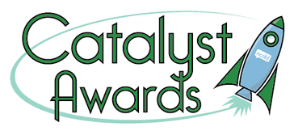

Think Together to Act Together
Finding and implementing sustainable solutions requires the insight, cooperation, and support of everyone affected.
CivicEvolution uses web, mobile, and face-to-face activities and applications to help people come together around their shared concerns in meaningful conversations where they can understand their differences and pursue their mutual interests through practical cooperation.
Our approach encourages collaboration among constituents while easing the burden and risk for officials.
We work with citizens and community leaders. Send us your email address to find out how we can help your community.
Crowd-assisted Proposal Evolution (CAPE)
Crowd-assisted Proposal Evolution (CAPE) is an easy-to-use email-based process that lets anyone introduce an idea to a group and develop it into a widely-supported proposal for action.
Imagine your group has a problem or opportunity, but no plan to deal with it. Our easy-to-use process can help your group develop a widely-supported plan.
Here's how CAPE works:
- Together or individually, write up your initial ideas.
- Include any questions you can think of for others that might help you improve them.
- Tell us whom you want to send them to. (Make your group as diverse as possible.)
- We send your ideas and questions via email and collect the responses into an easy-to-use workspace.
- You evaluate, sort, and prioritize the responses with tagging and highlighting.
- Then you combine your group's responses with the original ideas in an updated plan.
- Add some new questions to help everyone refine the plan.
- We send your updated plan and questions to the participants.
- Continue this process until your group reaches consensus.
CAPE is our newest project and the result of everything we learned. We will begin beta testing in January, 2015
If you would like to learn more about CivicEvolution and our exciting CAPE project, please email info@civicevolution.org
Featured projects

CivicEvolution has partnered with the City of Greater Geraldton in Western Australia for their Sustainable Future City Project, 2029 and Beyond. Their mission is to develop a sustainable future city and region plan by and for the community. CivicEvolution is providing tools and processes in the 2029 and Beyond CivicEvolution home page for engaging citizen participants in deliberative collaboration to develop ideas and proposals for the sustainable community planning project.
The 2029 project including CivicEvolution was selected as a finalist in the Reinhard Mohn Prize competition.
CivicEvolution hosted the NCDD Catalyst Awards in partnership with the National Coalition for Dialogue & Deliberation. Two $10,000 prizes were awarded to team projects organized, led and selected by NCDD members that jump-start the field’s next best ideas and impact our communities’ and our country’s ability to solve its most challenging problems.
About CivicEvolution
CivicEvolution is produced by Practical Evolution, LLC based in San Francisco, California.
Think together to act together
We believe that meaningful change comes from the grassroots in the form of community written and supported plans to solve community problems.
How we do it
We complement traditional face-to-face citizen engagement with the scalability and access of social media and collaborative production. Our goal is to maximize everyone's ability to participate in creative community problem solving by giving them a platform where they can "Think together to act together."
Anyone can float ideas and aggregate clicks–meaningful change comes from a community written and supported plan to put an idea into action.
We solve the pain points experienced by both citizens and decision-makers. Citizens can't commit to full-time activism and decision makers often don't have access to quality and cost-effective public input.
We empower leaders to make an explicit promise to listen to and collaborate with their constituents by creating a safe, engaging, and productive way for decision makers to gather quality community input.
Our solution outsources democracy back to the citizens in the form of community plan writing. They elicit community feedback, filter it, and synthesize it into an actionable proposal that decision-makers can review and negotiate.
Ultimately, citizens experience themselves as authentic participants in the creative co-governance of their communities
Our team

|
Brian Sullivan, Founder and CEO Brian Sullivan is a technology and process designer and consultant for Deliberative Democracy projects. He has worked on many projects in Australia and India with Dr. Janette Hartz-Karp including Australia's first Citizens' Parliament as well as numerous public engagement projects in the U.S. He leverages his 25 years of technology and 10 years of deliberative democracy experience to help people Think together so they can Act together. He partners with deliberation and communication experts to design and deliver processes that bring people together in constructive dialogue where they can understand one another, explore their differences and pursue their mutual interests through practical cooperation. |

|
Prof Janette Hartz-Karp, International Public Engagement Advisor Janette is renowned nationally and internationally for her innovative work in deliberative democracy. Janette is currently involved in a number of action research initiatives including a pilot for a global dialogue on climate change in Alberta Canada; preventative health deliberations across Australia; creating a deliberative community/collaborative governance in regional WA - one of the finalists in the international Reinhard-Mohn Prize 2011 for ‘vitalizing democracy’ |

|
Michael Briand, PhD, Communications Director Michael is a writer and a facilitator of civic and political communication. He holds a PhD in metaethical and political philosophy from the Johns Hopkins University, a master’s in philosophy from Oxford University, and a BGS in government and psychology from the University of Michigan. He has worked with the Charles F. Kettering Foundation and the Colorado Community College System, where he served four years as director of a community civic development service he created for the state’s two-year colleges. Michael’s publications include Practical Politics: Five Principles for a Community that Works (University of Illinois, 1999) and Freedom, Democracy, and the Purpose of Life (forthcoming). |
Here are a few of our recent projects
2029 and Beyond: Sustainable Future City Project
CivicEvolution has partnered with the City of Greater Geraldton in Western Australia for their Sustainable Future City Project. Their mission is to develop a sustainable future city and region plan by and for the community. CivicEvolution is providing tools and processes for engaging citizen participants in deliberative collaboration to develop ideas and proposals for the sustainable community planning project.
The 2029 project including CivicEvolution was a finalist in the international Reinhard-Mohn Prize 2011 for ‘vitalizing democracy’
Citizens Parliament
The first ever Australian Citizens' Parliament brought 150 randomly selected Australians together for 3 days to answer the question: "How can Australia's political system be strengthened to serve us better?"
CivicEvolution provided an Online Parliament for 2600 randomly selected Australian citizens. Hundreds of these citizens used CivicEvolution to develop and support proposals that became the starting point for the face-to-face assembly in Canberra. The Citizens' Parliament deliberated, improved and endorsed 11 of the proposals that were developed in the Online Parliament. The final recommendations of the Citizens' parliament were presented to the Prime Minister, Parliament, and the media.
Countywide Community Forums in Seattle, WA
Countywide Community Forums is designed to make democracy more user-friendly and to bring the public forum to your kitchen table, neighborhood, and workplace. Over 1800 Citizen Councilors are registered and making their opinion count while building stronger connections to their community. CivicEvolution was tasked to give the citizen participants greater say in the development of the forums and help increase citizen participation in the program.
Contact us
If you would like to learn more about CivicEvolution, please contact us at info@civicevolution.org